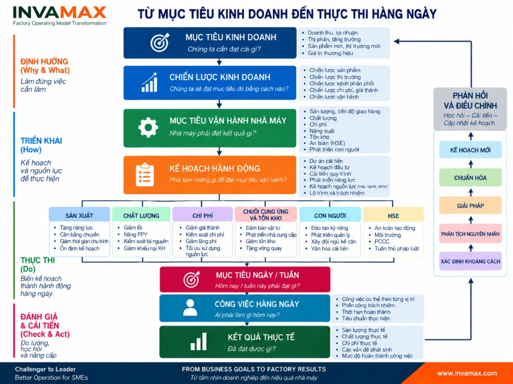

Nhiều doanh nghiệp sản xuất không thiếu mục tiêu.
Doanh thu phải tăng. Lợi nhuận phải cải thiện. Thị phần phải mở rộng. Sản phẩm mới phải ra nhanh hơn. Chất lượng phải tốt hơn. Chi phí phải giảm xuống.
Doanh nghiệp cũng có chiến lược để đạt những mục tiêu đó.
Nhưng khi đi từ phòng họp của Ban lãnh đạo xuống nhà máy, một câu hỏi rất quan trọng xuất hiện:
“Những mục tiêu và chiến lược đó sẽ làm thay đổi công việc hàng ngày trong nhà máy như thế nào?”
Đây chính là khoảng trống mà nhiều doanh nghiệp gặp phải:
Khoảng trống từ Strategy đến Execution.

1. Nhà máy không thể trực tiếp “thực thi chiến lược”
Giả sử doanh nghiệp đặt mục tiêu tăng trưởng doanh thu 30% trong năm tới.
Đây là Business Goal.
Ban lãnh đạo có thể lựa chọn nhiều chiến lược: mở thị trường mới, tăng thị phần, phát triển sản phẩm mới, điều chỉnh giá, mở thêm kênh phân phối hoặc cải thiện năng lực cạnh tranh về chi phí.
Nhưng người quản đốc dưới nhà máy không thể nhận một nhiệm vụ đơn giản là:
“Hôm nay hãy thực hiện chiến lược tăng trưởng 30%.”
Chiến lược phải được chuyển hóa thành những yêu cầu vận hành cụ thể.
Nếu sản lượng dự kiến tăng 30%, nhà máy phải trả lời:
- Capacity hiện tại có đáp ứng được không?
- Bottleneck nằm ở đâu?
- Có cần đầu tư thêm máy hay có thể tăng năng suất bằng cải tiến?
- Nhân lực hiện tại có đủ không?
- Supplier có đáp ứng được sản lượng mới không?
- Inventory cần thay đổi thế nào?
- Chất lượng có giữ được khi sản lượng tăng?
- Hệ thống quản lý hiện tại có chịu được quy mô lớn hơn?
Đến đây, một mục tiêu kinh doanh bắt đầu trở thành Factory Operational Goals – Mục tiêu vận hành nhà máy.
2. Business Goals phải được chuyển thành Factory Operational Goals
Một nhà máy không nên vận hành tách rời chiến lược doanh nghiệp.
Các mục tiêu như tăng trưởng, lợi nhuận, thị phần hay phát triển sản phẩm mới cuối cùng phải được chuyển thành những yêu cầu cụ thể đối với:
Production → Quality → Cost → Supply Chain & Inventory → People → HSE.
Nếu chiến lược cạnh tranh dựa trên giao hàng nhanh, nhà máy không thể chỉ đặt KPI OTD.
Doanh nghiệp phải xem lại cả hệ thống:
Planning → Material → Capacity → Production Flow → Inventory → Supplier → Daily Management.
Nếu chiến lược là phát triển phân khúc sản phẩm cao cấp, yêu cầu đối với Quality System, Process Capability và Standard Work cũng phải thay đổi.
Nếu chiến lược là cạnh tranh bằng chi phí, câu hỏi không chỉ là:
“Năm nay phải giảm bao nhiêu phần trăm chi phí?”
Mà phải trở thành:
“Những năng lực vận hành nào phải thay đổi để tạo ra cấu trúc chi phí tốt hơn?”
Đó là sự khác biệt giữa giao KPI xuống nhà máy và triển khai chiến lược xuống hệ thống vận hành.
3. Mục tiêu vận hành vẫn chưa phải là thực thi
Giả sử nhà máy đã xác định:
- Tăng capacity 20%
- Giảm defect 30%
- Giảm inventory 15%
- Tăng productivity 10%
- Cải thiện delivery performance
Đó vẫn chỉ là mục tiêu.
Bước tiếp theo phải trả lời:
“Chúng ta phải thay đổi điều gì để đạt được những kết quả đó?”
Đây là tầng Action Plan.
Bao gồm:
- Improvement Projects
- Investment Plan
- Process Improvement
- Capability Development
- Resource Planning
Mỗi kế hoạch phải có:
Owner → Target → Timeline → Resource → Review Mechanism.
Nếu thiếu những yếu tố này, Action Plan rất dễ trở thành danh sách việc cần làm thay vì một hệ thống thực thi.
4. Chiến lược chỉ trở thành sự thật khi nó đi đến công việc hàng ngày
Một kế hoạch năm phải được triển khai xuống:
Annual Goals
↓
Monthly / Weekly Targets
↓
Daily Targets
↓
Daily Tasks
Cuối cùng phải trả lời được:
“Hôm nay ai phải làm gì?”
Ví dụ:
Mục tiêu tăng trưởng → Yêu cầu tăng capacity → Dự án giảm cycle time → Target sản lượng tuần → Công việc cụ thể hôm nay.
Đó chính là lúc Strategy biến thành Execution.
Nếu chuỗi liên kết này không tồn tại, doanh nghiệp rất dễ rơi vào tình trạng:
- CEO nói về chiến lược.
- Factory Director nói về KPI.
- Quản đốc nói về sản lượng.
- Nhân viên nói về công việc hôm nay.
Tất cả đều bận.
Nhưng chưa chắc tất cả đang cùng đi về một hướng.
5. Plan – Actual – Gap: nơi hệ thống quản trị bắt đầu hoạt động
Trong vận hành luôn tồn tại khoảng cách:
PLAN ↔ ACTUAL
Điều quan trọng không phải xây một nhà máy không có vấn đề.
Điều quan trọng là xây một hệ thống có khả năng phát hiện và xử lý vấn đề nhanh.
Khi Actual khác Plan:
Identify the Gap
↓
Root Cause Analysis
↓
Solutions
↓
Standardize
↓
New Plan
Ví dụ:
Target: 10.000 sản phẩm/ngày.
Actual: 8.700 sản phẩm/ngày.
Một hệ thống quản trị yếu dừng ở:
“Hôm nay chỉ đạt 87% kế hoạch.”
Một hệ thống tốt phải tiếp tục:
Gap là gì? → Nguyên nhân ở đâu? → Ai xử lý? → Khi nào hoàn thành? → Giải pháp có hiệu quả không? → Có cần chuẩn hóa không?
Daily Management vì vậy không nên chỉ là cuộc họp báo cáo số liệu.
Nó phải là cơ chế biến bất thường thành hành động quản trị.
6. Feedback Loop: thực thi phải quay trở lại chiến lược
Mô hình không kết thúc ở Actual Results.
Kết quả thực tế phải quay trở lại hệ thống thông qua Feedback & Adjustment.
Learn → Improve → Update the Plan.
Đôi khi vấn đề không nằm ở thực thi.
- Có thể kế hoạch sai.
- Có thể giả định ban đầu sai.
- Có thể capacity thực tế khác dự kiến.
- Có thể thị trường thay đổi.
- Có thể nguồn lực không đủ.
Khi đó doanh nghiệp phải có khả năng học hỏi, điều chỉnh và lập kế hoạch mới.
Ở cấp độ cao hơn, những bài học từ vận hành thậm chí có thể khiến doanh nghiệp phải điều chỉnh Business Strategy hoặc Business Goals.
Hệ thống vì vậy không phải một đường thẳng.
Nó là một vòng lặp quản trị liên tục.
7. Khoảng trống giữa Strategy và Execution chính là bài toán của Operating Model
Khi doanh nghiệp gặp những tình trạng:
- Chiến lược có nhưng triển khai chậm
- Mục tiêu cấp trên không xuống được hiện trường
- Các phòng ban đều đạt KPI nhưng kết quả chung không đạt
- Họp nhiều nhưng vấn đề vẫn lặp lại
- CEO phải can thiệp sâu vào vận hành
- Quản lý phụ thuộc vào một vài cá nhân
- Plan và Actual được báo cáo nhưng không tạo hành động
Vấn đề không nhất thiết nằm ở chất lượng chiến lược.
Nó có thể nằm ở Operating Model nằm giữa chiến lược và con người thực thi.
Một Factory Operating Model tốt phải tạo được sự liên kết:
Strategy → Goals → Process → Organization → Resources → Management System → Daily Execution → Results → Learning.
Đây cũng là lý do INVAMAX không nhìn Factory Transformation đơn thuần dưới góc độ Lean, Kaizen hay Digital Transformation.
Lean là công cụ. Digital là công cụ. AI cũng là công cụ.
Điều cần xây trước hết là một mô hình vận hành có khả năng biến mục tiêu kinh doanh thành kết quả thực tế một cách có hệ thống.
Một câu hỏi dành cho CEO và Factory Director Hãy chọn một trong ba mục tiêu kinh doanh quan trọng nhất của doanh nghiệp năm nay. Sau đó đi lần lượt xuống:
Business Goal → Business Strategy → Factory Operational Goal → Action Plan → Weekly Target → Daily Task
Và hỏi:
“Hôm nay, những người dưới nhà máy đang làm gì khác đi để giúp doanh nghiệp đạt mục tiêu này?”
Nếu có thể chỉ ra một chuỗi liên kết rõ ràng, hệ thống thực thi đang hoạt động.
Nếu mối liên hệ bắt đầu đứt ở một tầng nào đó, rất có thể đó chính là nơi doanh nghiệp cần xây lại nền quản trị.
INVAMAX | Factory Operating Model Transformation
Từ mục tiêu kinh doanh đến kết quả nhà máy.
Từ chiến lược đến thực thi hàng ngày.
INVAMAX đồng hành cùng doanh nghiệp sản xuất trong việc đánh giá, thiết kế và chuyển đổi mô hình vận hành nhà máy — nhằm xây dựng năng lực thực thi cần thiết để đạt mục tiêu kinh doanh và nâng cao năng lực cạnh tranh.